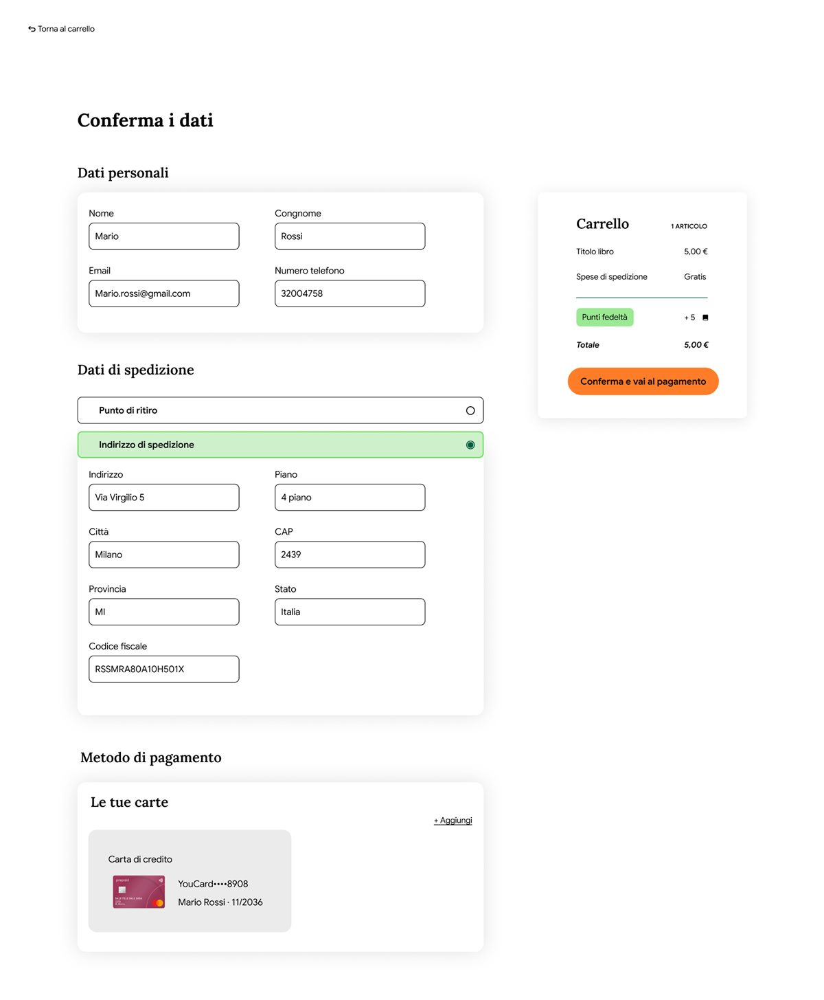
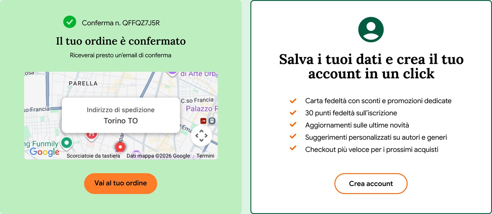
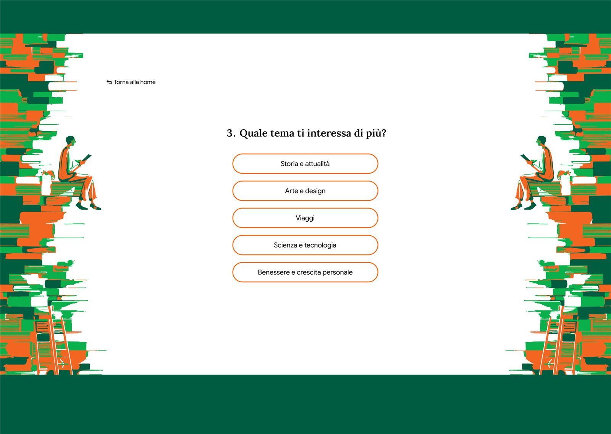
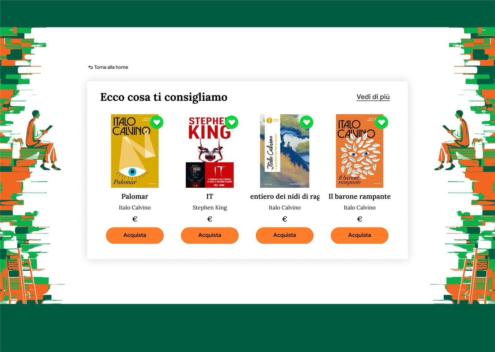
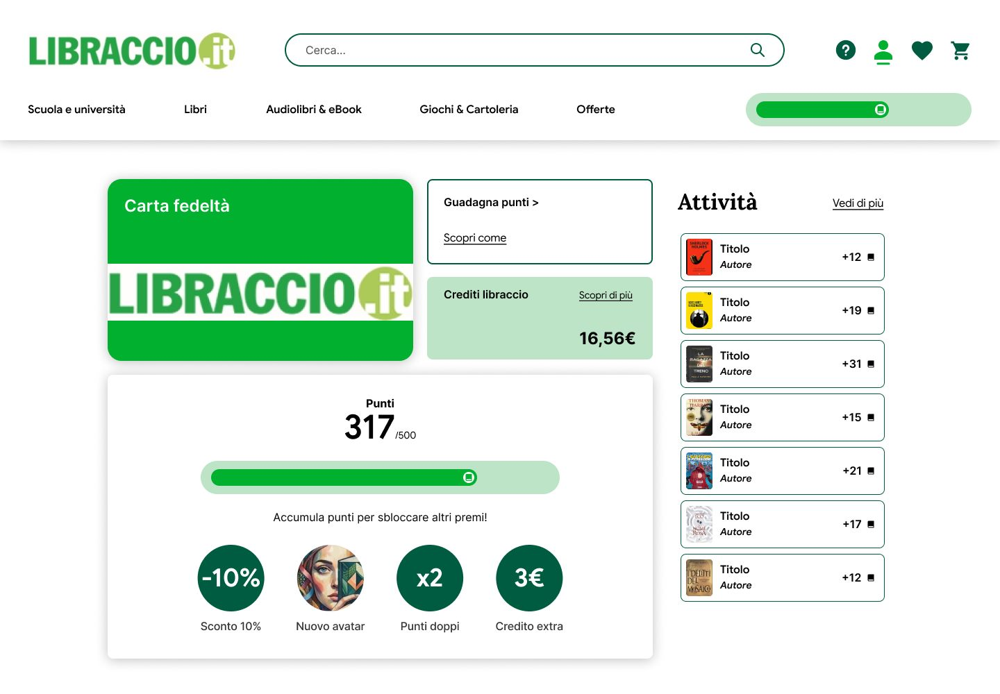
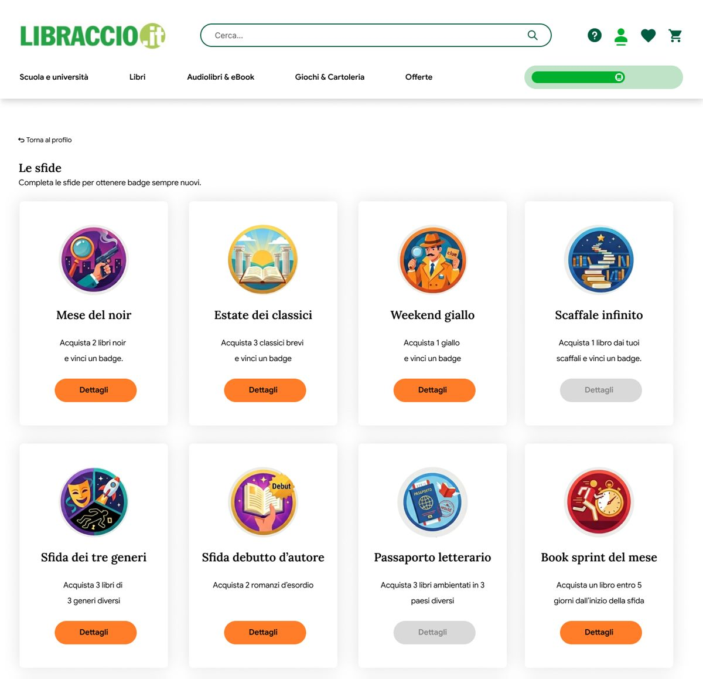
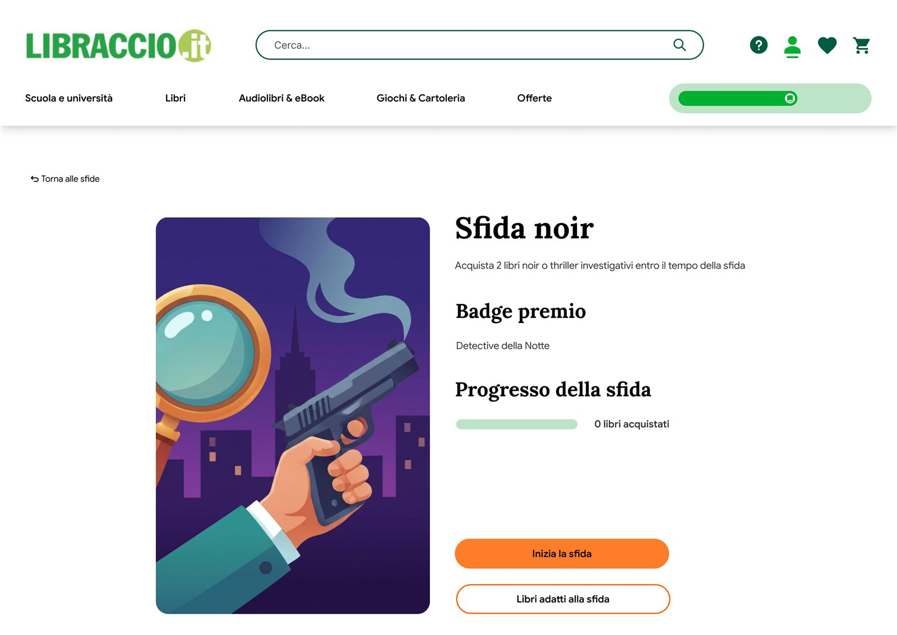

Trasformare studenti, famiglie e lettori soddisfatti in ambassador, e mantenerli ingaggiati nel tempo.
Brief reale, Master Talent Garden
Progetto di team
UX research e UI
E-commerce
Checkout
Engagement
Come abbiamo fatto ricerca
Quattro metodi per ascoltare gli utenti e leggere i loro comportamenti.
6interviste
15evidenze
5aree
Interviste
Sei intervistati tra genitori, universitari e giovani lavoratori.
Benchmark
Il confronto con i principali e-commerce di libri.
Analisi euristica
L'analisi dei flussi e delle criticità principali del sito.
Digital observation
Le recensioni online su Trustpilot, Bestshopping e Reddit.
15 evidenze, 5 aree
Dai dati raccolti abbiamo raggruppato per argomento quello che è emerso dagli utenti.
UI e navigazione
Un'architettura dell'informazione chiara e veloce.
Informazioni sui libri
Disponibilità e condizioni dei libri usati.
Pagamento
Velocità e pochi passaggi chiari.
Guida e suggerimenti
Consigli e supporto nella scelta dei libri.
Registrazione
Una reward invoglia gli utenti a creare un account.
Come abbiamo risposto ai bisogni
Le feature che abbiamo aggiunto per migliorare l'engagement e l'esperienza d'acquisto.
Un checkout, due percorsi
Abbiamo diviso il checkout in base al tipo di utente: chi ha già un account e chi compra per la prima volta. Meno passaggi, meno attrito.
L'utente registrato accede, trova i dati già precompilati, li controlla e completa l'ordine. Il sistema riconosce chi ha già acquistato.
Il nuovo utente segue una progress bar che dice sempre dove si trova, cosa ha completato e quanto manca. Meno incertezza, più fiducia.
Dati e spedizione
Pagamento

Dopo l'ordine, 30 punti di benvenuto
Dopo la conferma l'esperienza non si interrompe: una call to action propone di registrarsi. I dati ci sono già, basta una password per trasformare il checkout in un account. Come incentivo l'utente riceve 30 punti fedeltà, un primo reward che lo invita a tornare.

Non sai cosa leggere?
Dalla home un banner invita a scoprire consigli personalizzati. Bastano tre domande su età, genere e interessi di lettura, e il risultato non è un elenco generico, ma il libro giusto per quel momento.


Ogni azione vale punti
Ogni euro speso vale un punto, ma il vero valore nasce dalle azioni: recensire un libro, scegliere un usato scolastico o un prodotto outlet, ordinare almeno 3 libri, creare un account.
Più punti, più vantaggi: sconti progressivi sulle Mystery Box, dal 10% con 100 punti al 20% con 200. La fedeltà diventa visibile, concreta e gratificante.

Ogni libro, un passo in più
Le sfide di lettura propongono percorsi a tema: si acquista un numero definito di libri e si sbloccano badge da collezionare nel profilo. Ogni sfida ha la sua pagina, con il badge in palio, la progress bar e i titoli consigliati per completarla.


Scaffali da condividere
Con gli scaffali l'utente raccoglie i libri preferiti in collezioni: per umore, genere, tema o qualsiasi criterio abbia senso per lui.
Gli scaffali si possono condividere tramite link con amici, familiari e altri lettori: il passaparola parte da qui.